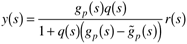
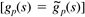
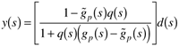
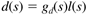
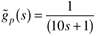
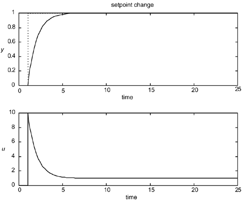
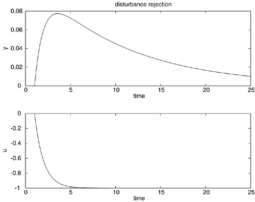

| [ Team LiB ] |
|
8.9 Effect of Model Uncertainty and DisturbancesFor controller design purposes, we assumed that the model was perfect. In practice there is model uncertainty. Model uncertainty will be handled by detuning the filter parameter, l, for robustness. The Effect of Model Uncertainty on Setpoint ResponseConsider a setpoint change only; then  We can see immediately that if the model is perfect , then we have the open-loop "control" formulation. When the model is not perfect, then the closed-loop response is much more complicated and can even be unstable if the filter [f(s)] is not detuned sufficiently. Disturbance RejectionConsider a disturbance only; then  Assume a load disturbance transfer function of the following form  Indeed, often the load disturbance is really a disturbance to the process input, so the disturbance transfer function has dynamic behavior similar to the process transfer function. It turns out that a controller that is tightly tuned and works well for setpoint changes may fail miserably on handling disturbance rejection. This is shown by the following example. Example 8.7: First-Order ProcessHere we consider a first-order process model transfer function, with a time unit of minutes  For simplicity, we assume a perfect model () and that the disturbance transfer function is the same as the process (). The IMC controller design procedure leads to the response for a step setpoint change shown in Figure 8-16, with l = 2 min. Although the response is unrealistically fast (l is too small compared with the process time constant), we wish to show that good setpoint tracking does not necessarily lead to good disturbance rejection. Figure 8-16. Setpoint response for Example 8.7, with l = 2 min. Disturbance rejection results are shown in Figure 8-17. Notice that there is a very slow response to the step load disturbance. This result is perhaps the greatest criticism of the standard IMC design procedure; it tends to lead to slow responses to load disturbances that occur at the process input. An improved IMC procedure for disturbance rejection is presented in the next section. Figure 8-17. Disturbance response for Example 8.7, with l = 2 min. |
| [ Team LiB ] |
|